Recruit · Referrals · agentflow-3mjma · 06/11 · STAGING (prod chưa đụng)
Trang Referrals đã làm lại theo mockup đã duyệt
Anh ơi, bản A1 + B2 (+ B3 là chế độ xem phụ) đã lên staging. Trang Manager/Admin giờ chỉ còn referral của Loan Officer (chương trình $500): bỏ hết dòng LO Recruiter Program và mọi dòng của người giới thiệu có vai Headhunter (luật a), áp ở BE nên danh sách, số tổng, bảng Top referrers, ô lọc Referrer và file CSV đều khớp nhau. Trang "My referrals" của LO giữ nguyên như anh dặn.
97 − 24 dòng program − 2 dòng Headhunter loại REFERRAL (QA Tentrefer, QA W10Refer) = 71. Tìm "QA Tentrefer" giờ ra 0. Người giới thiệu: 20 → 19 (mất HH). Bằng chứng: before/api-e2e-before.json, after/api-e2e-after.json.
Đã làm gì
- Dải số (A1) thay hàng tab: Referred / In progress / Joined / Stopped bấm để lọc (gạch dưới = đang chọn); Bonus pending ($ + số người) và Paid this year chỉ để đọc. 6 ô chia đều, không chừa khoảng trống; trên điện thoại 3×2.
- Top referrers thay khối "By referrer (20)": bảng gọn, sắp theo cột được, 5 người đầu, "Show all 19", bấm một dòng = lọc theo người đó (lưu trên URL). Đã lọc theo một người thì khối này ẩn.
- B2 mặc định: cột Referrer hẹp (avatar + tên, không còn chữ "Referrer" lặp). Nút Group by referrer cạnh Table/Cards (URL
group=referrer, nhớ theo trình duyệt) chuyển sang B3: xếp theo người giới thiệu, mỗi người một dòng nhãn nhẹ (tên · số giới thiệu · đã gia nhập · thưởng chờ), ẩn cột Referrer. - Bỏ bộ lọc Program, Qualifying và nhãn Program khỏi trang Manager/Admin (Mine vẫn giữ).
- Cả hai trang: bước xong mà không có ngày hiện cùng dấu tick, chỗ ngày ghi "—"; tiêu đề bảng dính dưới thanh trên khi cuộn; cột Loan officer ghim khi kéo ngang, có bóng nhẹ.
Trước / sau — Manager, 1440
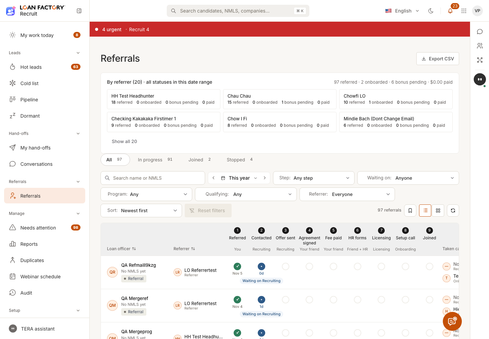
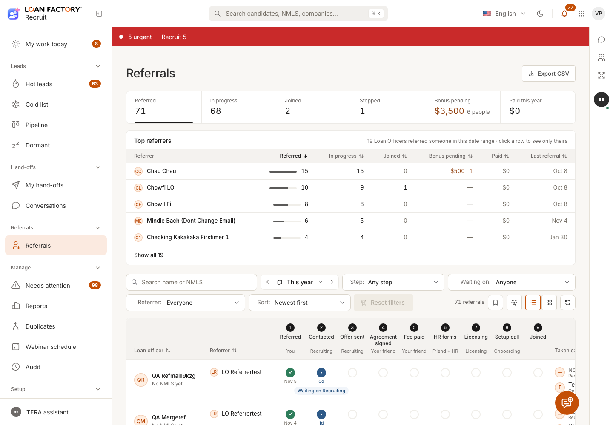
Kéo bảng sang phải (cột Loan officer ghim)
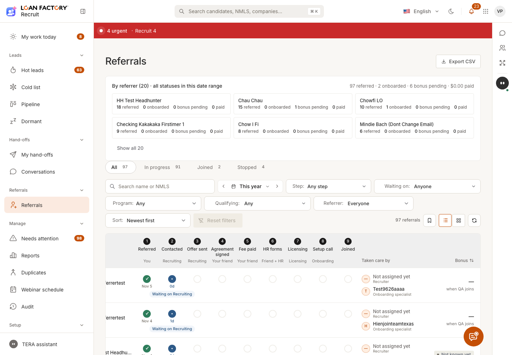
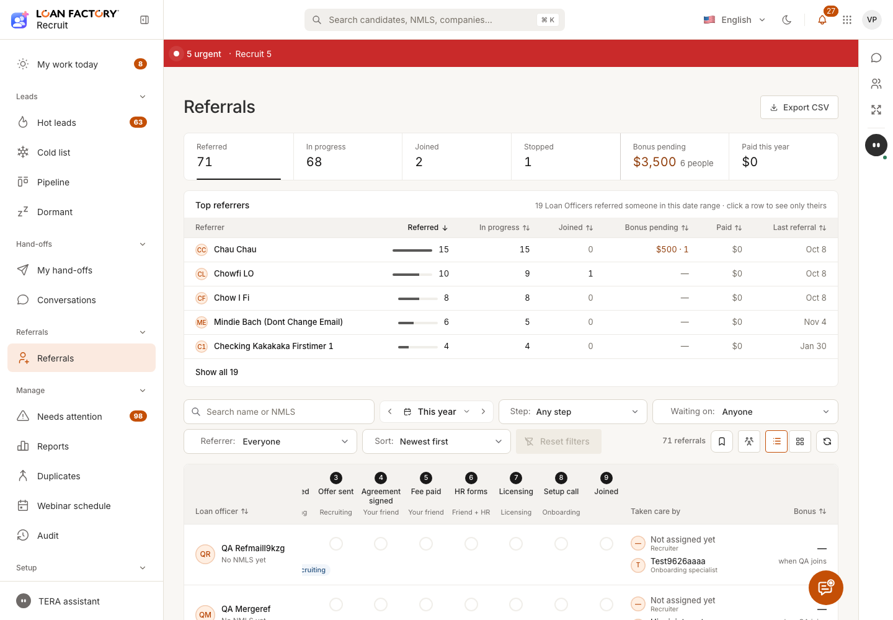
Cuộn xuống giữa trang (tiêu đề dính)
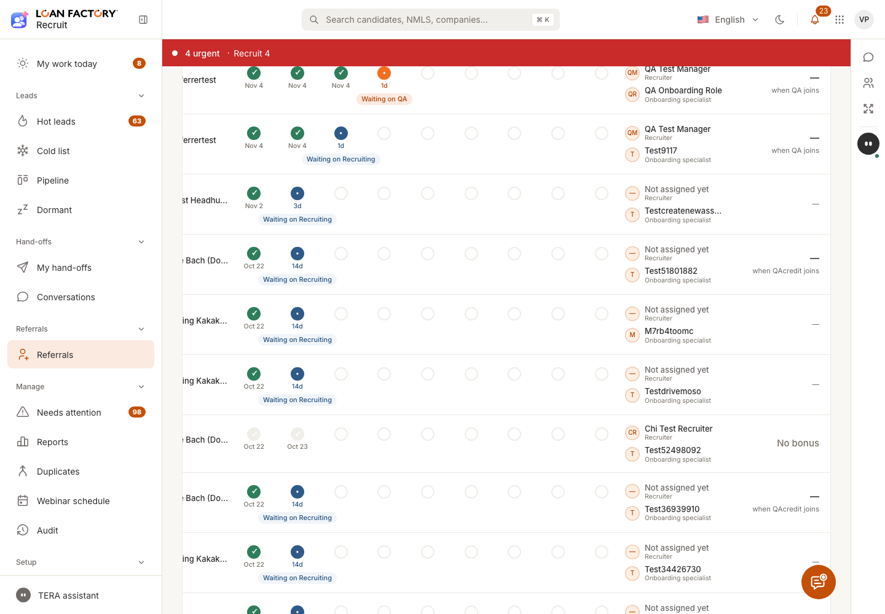
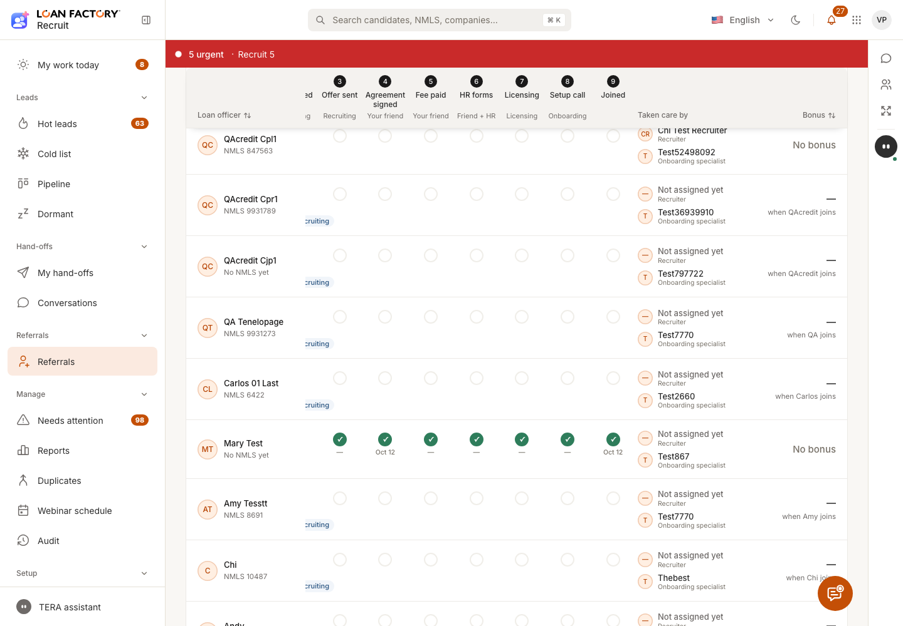
Các trạng thái mới (sau)
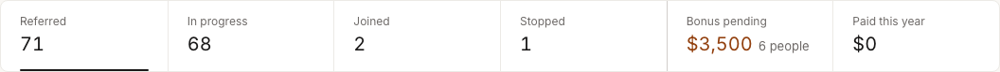
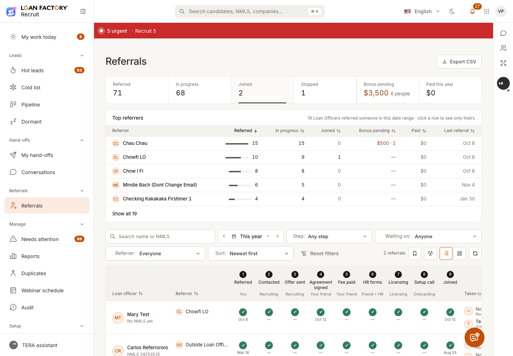
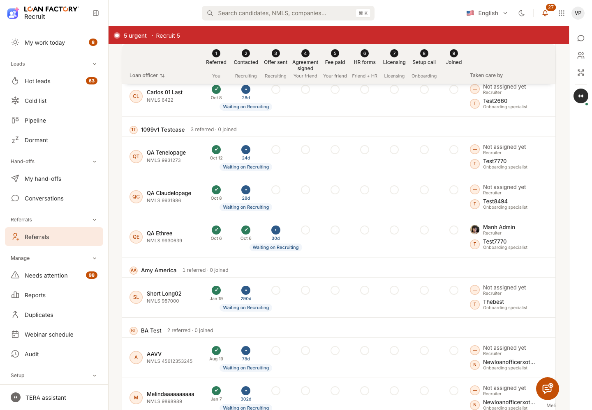
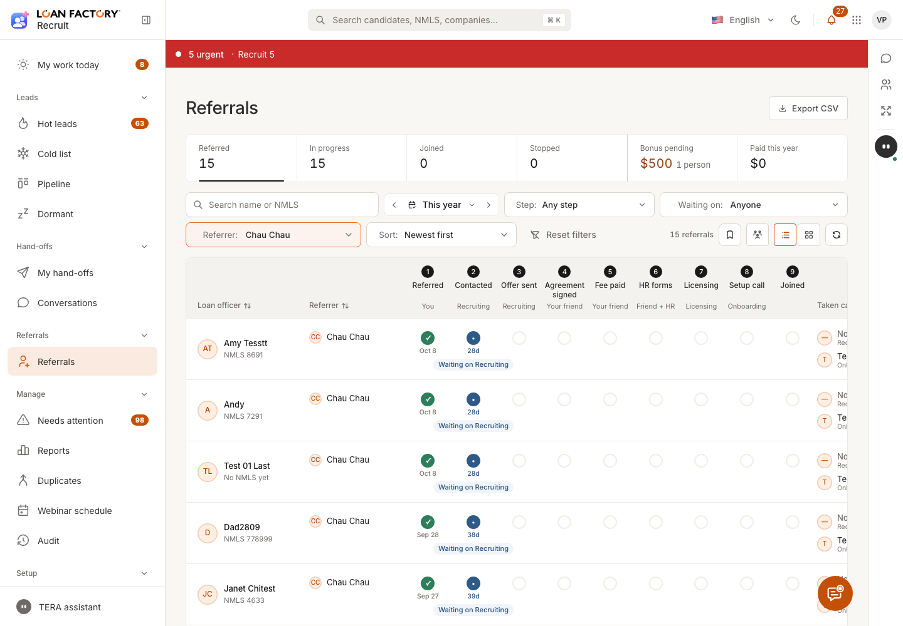
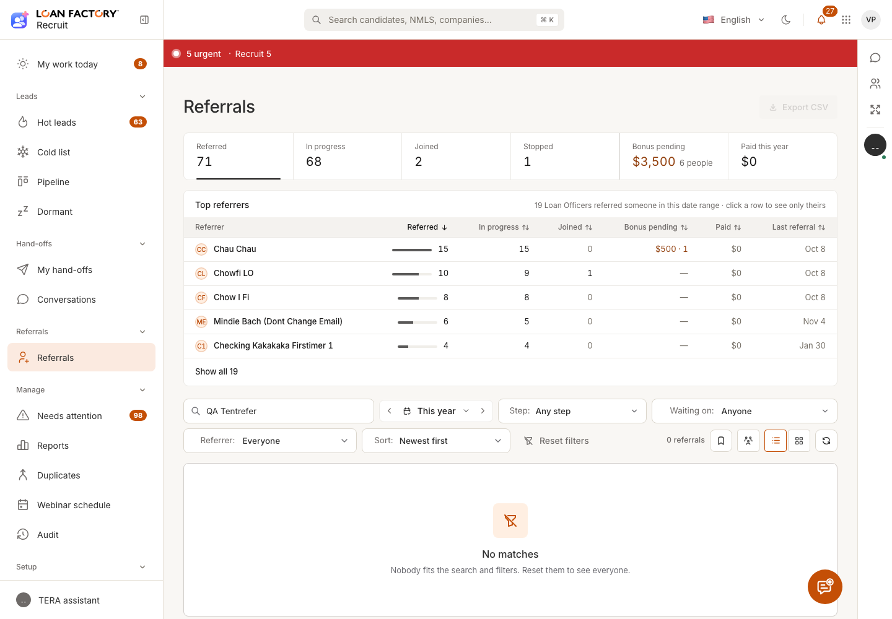
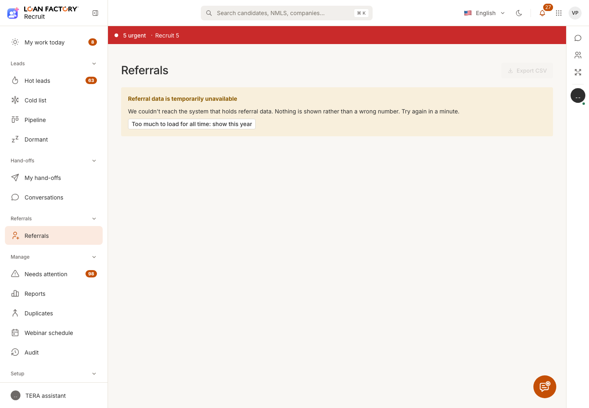
Điện thoại 375 và trang LO (Mine)
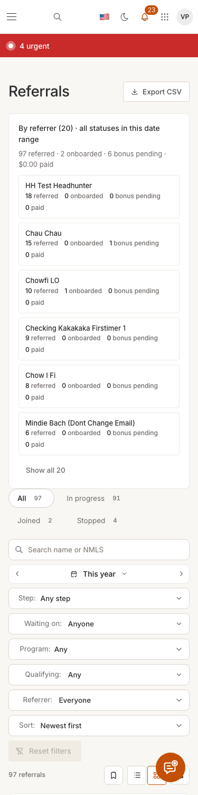
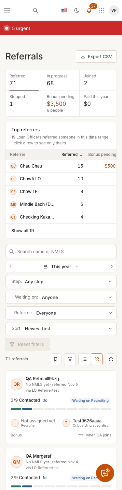
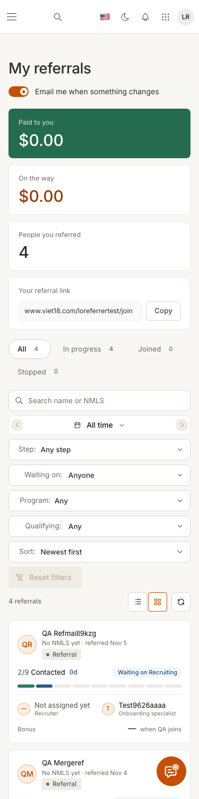

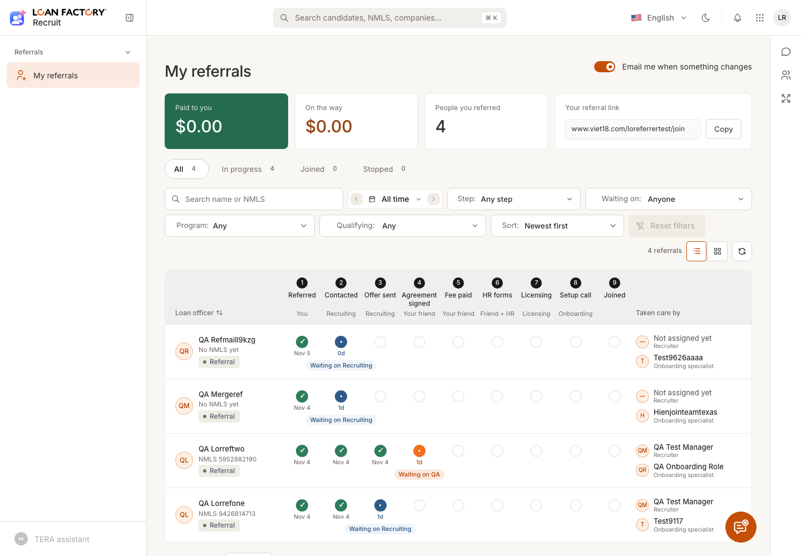
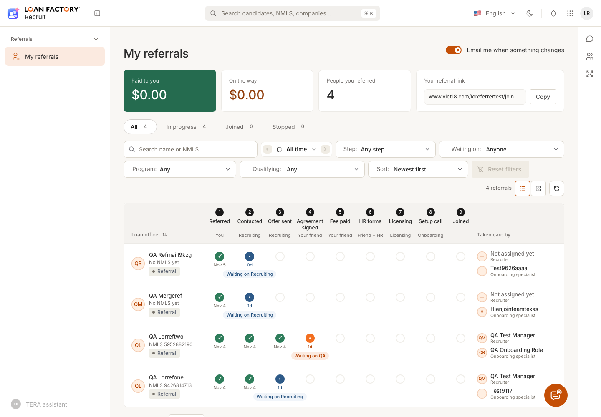
PR và trạng thái
| Repo | PR | Merge | Staging |
|---|---|---|---|
| recruit-be | #876 D394 | d906f1cd2 | cd-staging 42099469676 ✓ |
| recruit-fe | #712 | ed20f5ca | cd-staging 42099492959 ✓ |
| recruit-fe | #715 (sửa dải số + Top referrers trên 375) | bc60631a | cd-staging 42104661442 ✓ |
Còn mở / anh quyết
- Prod: chưa đẩy. Ba PR này phải đi cùng lô be #830 + #863 và fe #698 (trang gộp chưa lên prod).
- Ô "Paid this year" cộng tiền đã trả của những người được giới thiệu trong khoảng ngày đang chọn (không phải theo ngày trả). Chọn khoảng khác thì nhãn đổi thành "Paid".
- Luật Headhunter tìm người qua email trên quyền Recruit hoặc liên kết referral; Headhunter không có cả hai thì vẫn lọt (staging thì đủ). TEAM_LEAD chưa tính là Headhunter — anh muốn loại luôn không?
- Dòng có chương trình "PENDING" (chưa chốt) mà vào bằng trang program cũng bị loại, theo đúng nhãn "LO Recruiter Program (not confirmed)" trang đang hiện.
- Trên 375, bảng Top referrers chỉ còn 3 cột; cột "Bonus pending" có thể phải kéo ngang trong khung (không làm trang cuộn ngang).
- B3 phân trang theo thứ tự tên người giới thiệu A→Z; một người dài qua 2 trang thì trang sau hiện lại nhãn của họ.